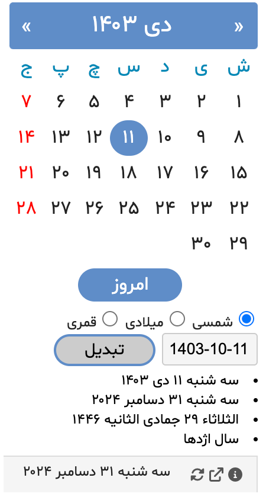
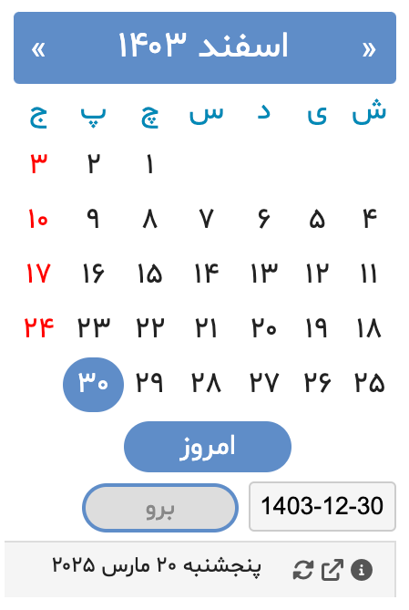

افزونه تقویم جلالی
یک افزونه ساده مبتنی بر جاوااسکریپت برای مرورگرهای Chrome و Edge که امکان
استفاده از تقویم جلالی (شمسی) و تبدیل تاریخ را فراهم میکند.
نسخه: ۳.۴۰
آخرین بروزرسانی: ۱۱ دی ۱۴۰۳
امکانات
-
نمای ماهانه: نمایش ماه جاری جلالی با معادل میلادی در
هنگام حرکت ماوس روی تاریخها
- ناوبری: حرکت آسان بین ماهها با دگمههای قبل/بعد
-
تبدیل چند تقویمی: تبدیل تاریخ بین:
- تقویم جلالی (شمسی)
- تقویم میلادی
- تقویم قمری
-
اطلاعات تکمیلی:
- نماد سال چینی برای سال انتخاب شده
- محاسبه فاصله روزها برای تاریخهای گذشته یا آینده
-
چند زبانه: در دسترس به زبانهای
فارسی٬انگلیسی٬آلمانی٬فرانسوی٬نروژي٬سوئدی٬روسی٬ترکی٬ایتالیایی و اسپانیایی
-
محدوده تاریخ: پشتیبانی از سالهای ۱۲۰۰ تا ۱۵۰۰ شمسی
راهنمای استفاده
- استفاده از دگمههای بالا سمت چپ و راست برای حرکت بین ماهها
- کلیک روی دگمه "امروز" برای بازگشت به تاریخ جاری
- حرکت ماوس روی تاریخها برای مشاهده معادل میلادی
تبدیل تقویم
انتخاب هر تاریخ در یک سیستم تقویمی برای مشاهده معادل آن در:
- تقویم جلالی
- تقویم میلادی
- تقویم قمری
نصب
تاریخچه
اولین انتشار در مهر ماه ۱۳۸۵، این افزونه بیش از ۱۸ سال است که به کاربران
در استفاده از تقویم شمسی کمک میکند.
گالری

|
| تقویم نمای ماهیانه |
|

|
| تبدیل تاریخ |
|

|
| برو به تاریخ |
بازخورد و تماس
نظرات شما ارزشمند است! با من در پلتفرم X (Twitter) در ارتباط باشید:
@BahramMaravandi